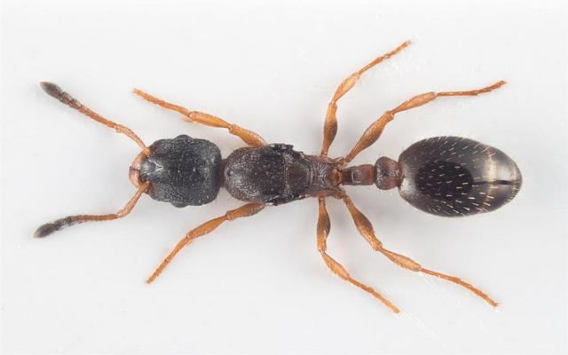

Leptothorax acervorum

Маленькие красно-коричневые муравьи, усики - 11-члениковые, на эпинотуме сверху шипы, обильное отстоящее опушение.
Является одним из наиболее распространенных видов муравьев Центральной и Северной Европы. Они распространились по всей Евразии, а также в Канаде и на Аляске.
Селиться, Leptothorax acervorum предпочитает в гнилых древесных остатках, в пнях и под корой. Очень редко строит гнезда под камнями или в расщелинах скал.
Является факультативным полигинным видом - в гнездах обычно две и более репродуктивные королевы.
Фуражирует в нескольких метрах от гнезда и забирается в кусты, где посещает колонии тлей. Но главным источником его пищи являются мелкие (мертвые) беспозвоночные (зоонекрофаг). Leptothorax acervorum обладает высокой системой обмена информацией о нахождении пищи.
Leptothorax acervorum является очень мирным соседом для других видов муравьев. Этим пользуются многие социальные паразиты: Leptothorax goesswaldi, Leptothorax kutteri, Leptothorax pacis, Plagiolepis pygmaea, которые основывают свои колонии на базе молодых колоний Leptothorax acervorum - убивая в них матку и, постепенно, замещая население муравейника своим видом.
Рабовладелец муравьи Harpagoxenus sublaevis предпочитает нападать на Leptothorax acervorum для пополнения своей армии рабов. Они осаждают их гнезда, убивая всех рабочих особей, пытающихся спастись бегством, откусывая у них усики и ноги своими чрезвычайно сильными, хотя и лишенными зубчиков мандибулами. Leptothorax acervorum избегает полного уничтожения, устраивая тоннели в твердой неразрушенной древесине, куда за ними не могут последовать эти, более крупные, муравьи.
Муравьи Leptothorax acervorum сильно зависят от ежедневных ритмов температуры. Оптимальная температура днем - 27-30°C, а ночью - 15-20°C. Кстати, они могут перенести кратковременное повышение температуры до 52°C!
Имитация зимовки подстегивает их к размножению. В неволе можно добиться до трех циклов размножения. Достаточными условиями «зимовки» для Leptothorax acervorum являются 4-6 недель проведенные ими при температуре 10°C.
Личинки подвижны и имеют развитые хорошо заметные мандибулы .
Идеальны для содержания новичками в маленьких формикариях. Неприхотливы в содержании и питании. Прекрасно себя чувствуют при комнатных температурах.
Другие названия: подкорный муравей
Особенности: имеется жало, поликалия
Размеры: рабочие: 2,5—3,5мм , матка: 4—6мм
Количество королев: полигиния
Размер кoлонии: 100—500
Тип муравейника: в разлагающейся древесине и под корой старых пней
Зимовка: обязательна
Питание: всеяден
Влажность: низкая ≈ 40—60%
Температура: низкая ≈ 23—24°С
Сложность содержания: очень легко
Подвижность: спокойные
Особенности: имеется жало, поликалия
Размеры: рабочие: 2,5—3,5мм , матка: 4—6мм
Количество королев: полигиния
Размер кoлонии: 100—500
Тип муравейника: в разлагающейся древесине и под корой старых пней
Зимовка: обязательна
Питание: всеяден
Влажность: низкая ≈ 40—60%
Температура: низкая ≈ 23—24°С
Сложность содержания: очень легко
Подвижность: спокойные